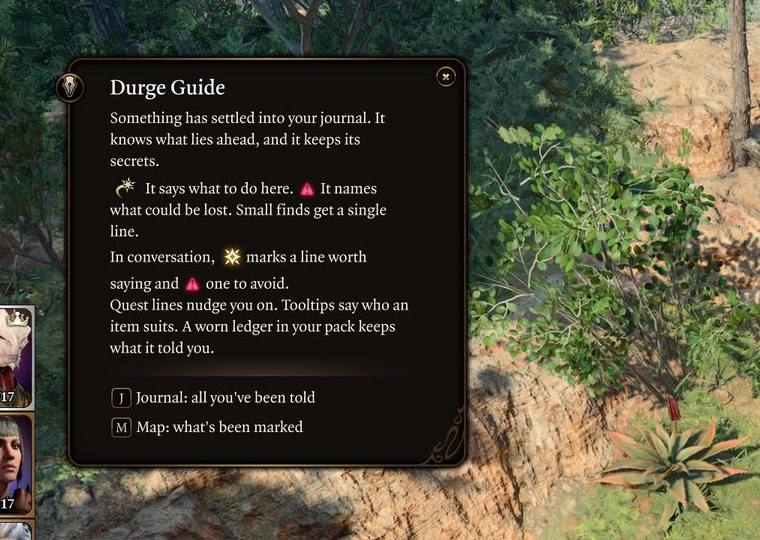
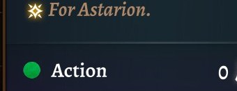
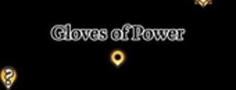
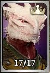
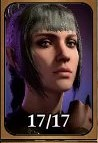
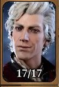
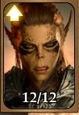

How much do you want to know?
Durge Guide is a mod for a first Dark Urge run in Baldur's Gate 3. A voice settles into the game's own screens, knowing what lies behind every door. It tells you only as much as you allow.
Choose a line.Press 1, 2 or 3.Tap a line to answer.
It stays silent until something could be lost for good. Even then, it won't say how.
It points the way and names what you could miss. What waits at the end of the road is your own affair.
It names the rolls, the loot and who will approve. The rest waits in your journal. Some things can't be unread.


There is no public download yet. Only the native Linux build has been tested.




It hides where you already look
There is no overlay and no new menu. Only the game's own screens, saying a little more than they did.
- A note where you stand, in the game's side popup.
- A line beneath a quest step.
- A mark beside a dialogue choice.
- A word in a tooltip, on who should wear it.
- A pin on your map. It's gone once you take what it marked.
- A warning before a door closes behind you.
- A book in your pack, that keeps what you were told.




It has someone in mind
A first Dark Urge playthrough. An Open Hand Monk, travelling with Astarion, Karlach and Shadowheart, with a few item mods in the pack. It follows you through all three acts.
Bring anyone else. A note looks at who stands with you when it speaks, and talks about them. Tooltips and quest lines stay written for that party, and they can't change their minds.
You can't have it yet
There is no public download. It runs on the native Linux build of the game, and has been tested on real saves in Acts 1 and 2. Act 3 has only been seen through a test jump.